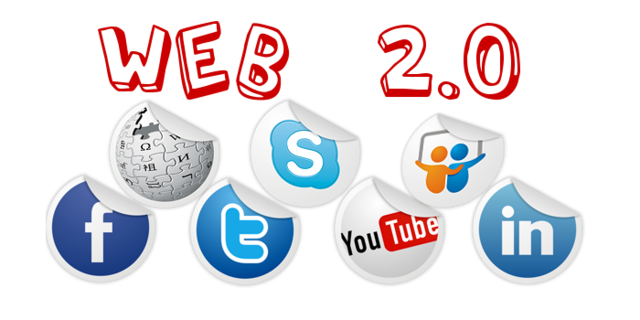
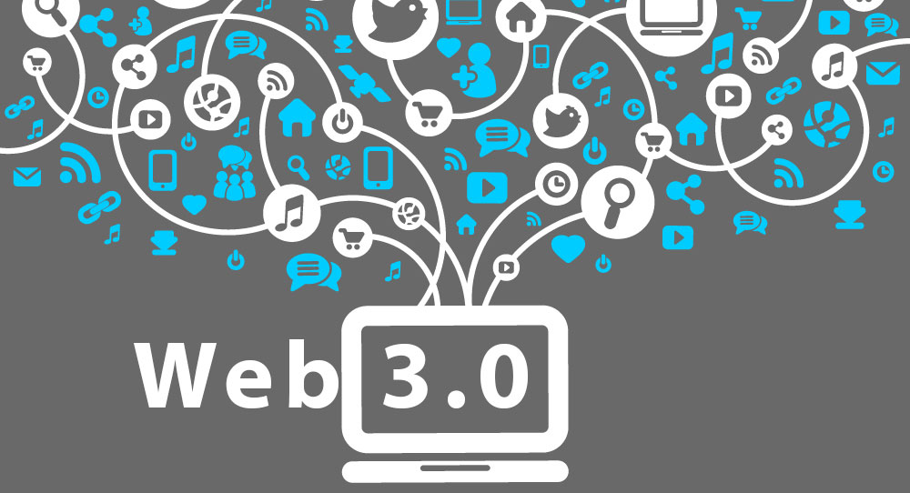

Años 2000
2001
Impacto de la fiebre .com
2004
Nacio la Web 2.0, donde se alojan los foros, blogs, comentarios y despues las redes sociales

2006
Estimaciones del número total de páginas web visitadas (600.000 millones)
2010
Se crea la Web 3.0 y se asocia a la web semántica, un concepto que se refiere al uso de un lenguaje en la red.

2016
La Web 4.0 se centra en ofrecer un comportamiento más inteligente y más predictivo, de modo que podamos poner en marcha un conjunto de acciones que tendrán como resultado aquello que pedimos, deseamos o decimos
Anterior
Principal